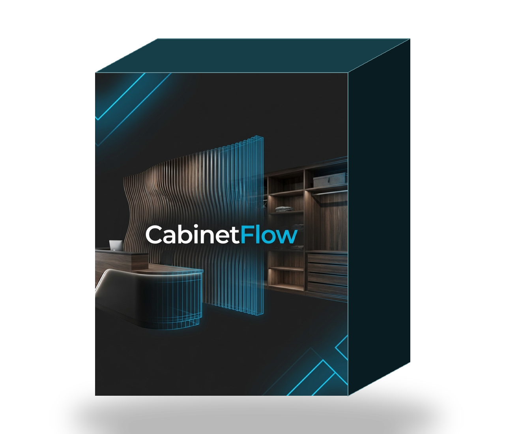
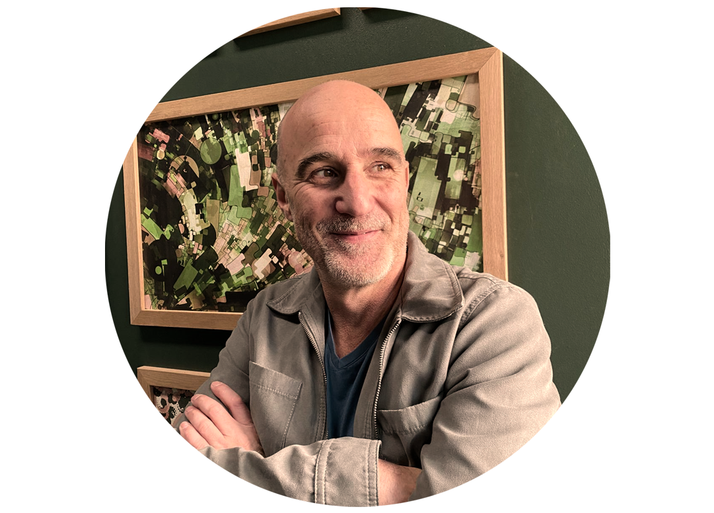
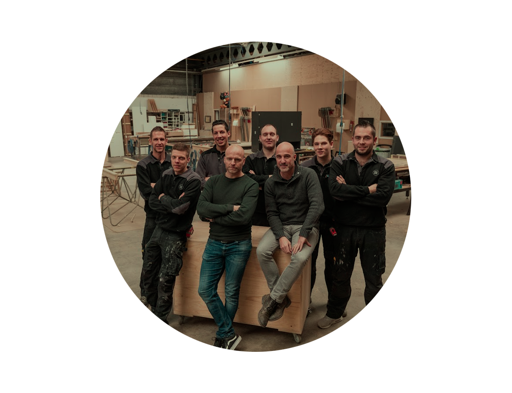
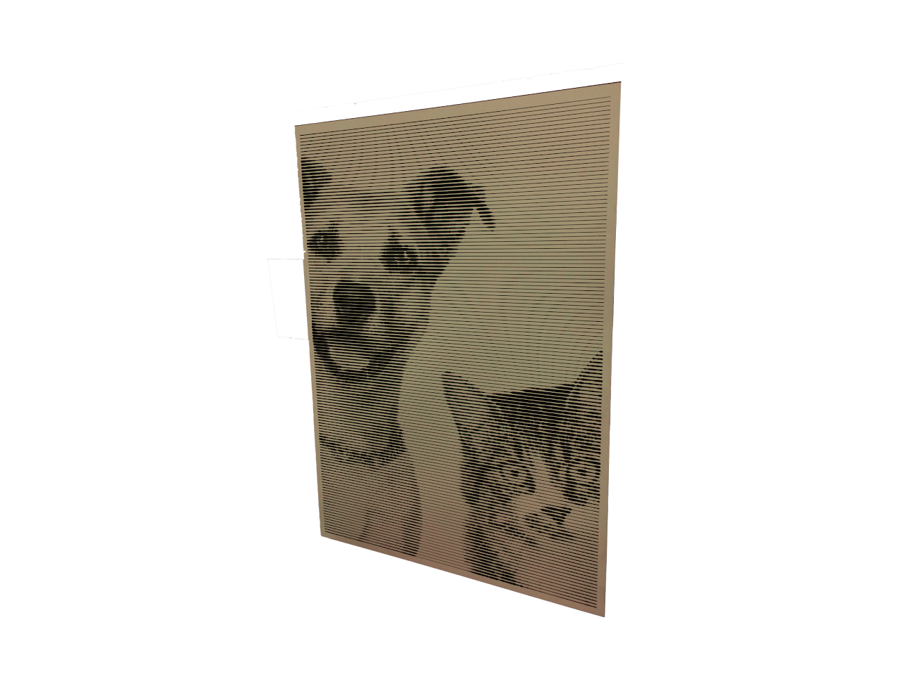
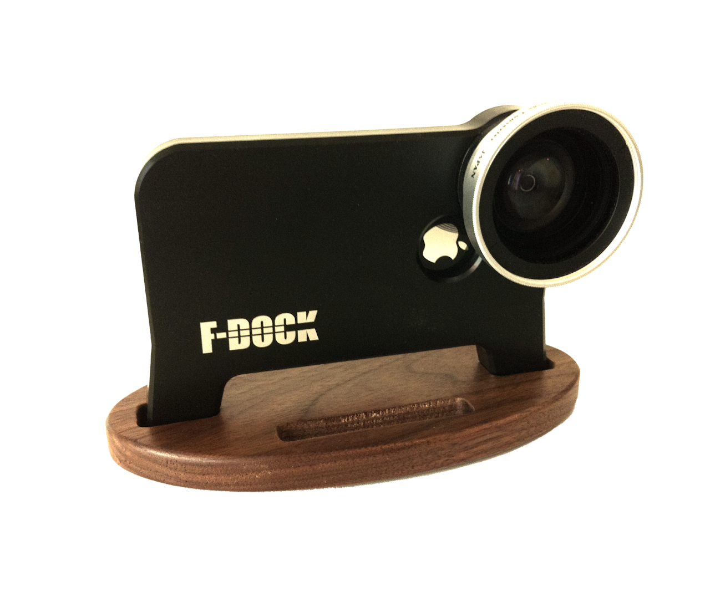
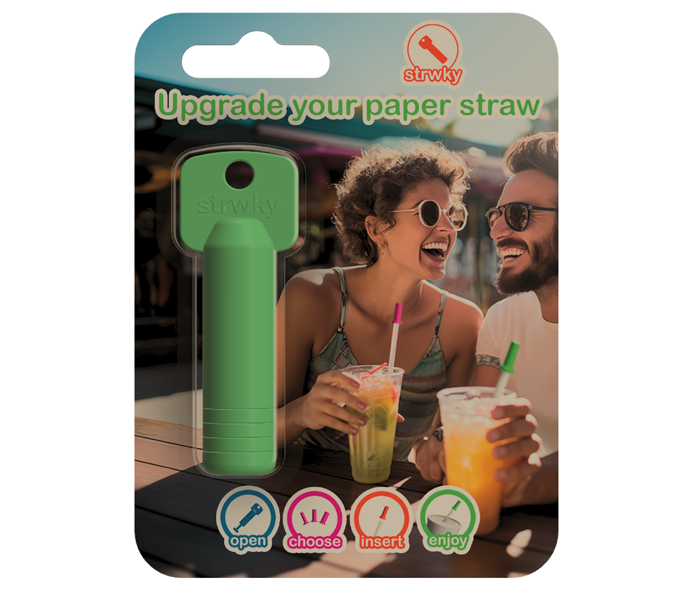
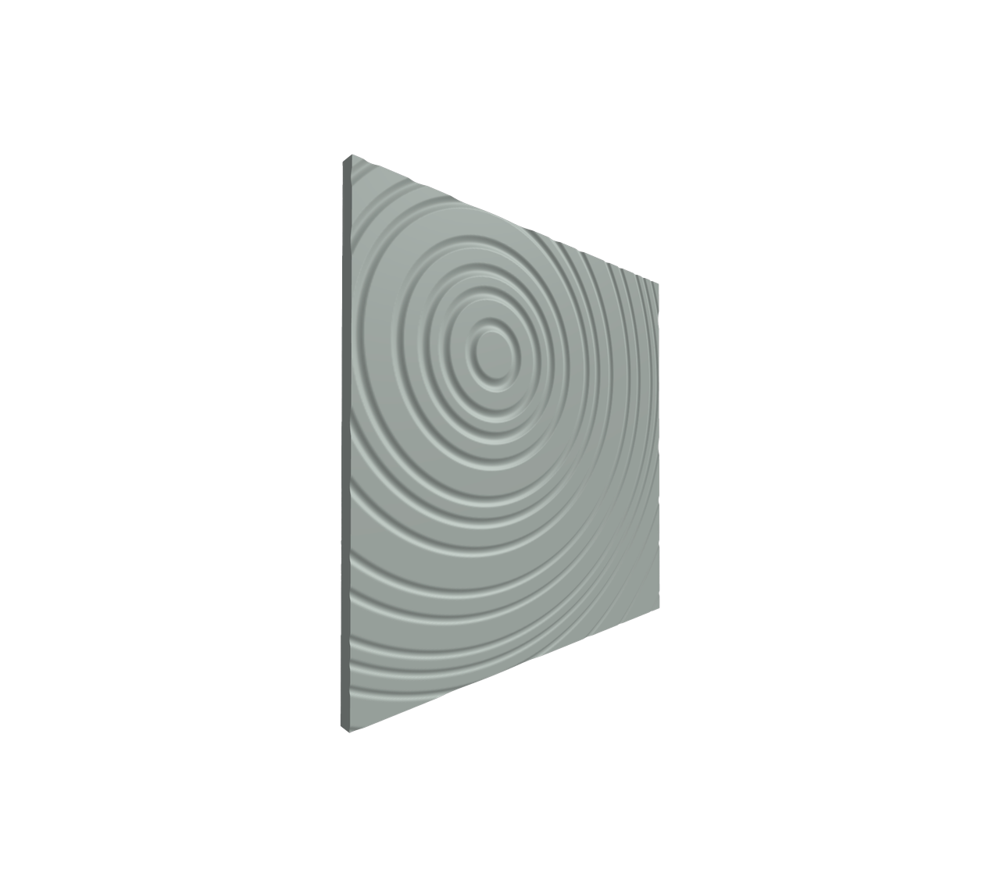

Cabinetflow
Fusion 360 add-in en macOS app voor kastenmakers. Van BLUM-import en materiaaltoewijzing tot offerte en CNC-export.

Over
Ik ben Mike van de Mortel, en Immortel Studio, dat ben ik.
Na het mede-oprichten en grootmaken van E3 Interieurbouw voelde ik dat mijn werk daar klaar was. Het was tijd om iets nieuws te beginnen.
Nu richt ik me op Immortel Studio, waar ik nog steeds meubels maak, maar ook mijn kennis gebruik om nieuwe en unieke producten te ontwerpen.
Ik kan mensen verrassen met hoe ik vraagstukken oplos, door mijn frisse en originele invalshoek. En met 30 jaar ervaring in ontwerpen en productieprocessen, kan ik die ideeën niet alleen bedenken maar ook omzetten in functionele producten.
Stuur me je vraagstuk, en ik ga aan de slag!
Werk
Diensten
Out-of-the-box oplossingen voor specifieke problemen en uitdagingen. Advies op maat voor interieur- en productontwerp, met een unieke en originele invalshoek.
Meubels en producten met behulp van CAD/CAM-software voor technische precisie. Gedetailleerde ontwerpen die esthetiek en functionaliteit combineren, afgestemd op de wensen van de klant.
Fysieke prototypes met behulp van 3D-printen en CNC-machines. Mogelijkheid om producten te ervaren en aanpassingen te doen voor de uiteindelijke productie.
Unieke meubels en producten in een moderne werkplaats, uitgerust met geavanceerde houtbewerkingsmachines. Kleine productieseries en volledig maatwerk met hoge kwaliteit en aandacht voor detail.
Producten die verder gaan dan interieurbouw, zoals functionele gadgets en gebruiksvoorwerpen. Technische kennis en creatieve ontwerpen voor praktische en innovatieve producten.
Projecten
Een greep uit projecten waar ik aan bijgedragen heb — van interieurbouw tot productontwerp en software.

Bij E3 Interieurbouw leerde ik projecten efficiënt en professioneel aan te pakken. Die ervaring neem ik mee naar Immortel Studio, waar ik me weer focus op mijn passie: op maat gemaakte meubels.
e3interieurbouw.nl
Met mijn ervaring in CNC-houtbewerking was Voeljefoto.nl een mooi project om producten buiten de interieurbouw te creëren. Door foto's tastbaar te maken via houtgravures, combineerde ik technologie en creativiteit.
Meer over VoelJeFoto
Bij F-Dock leerde ik technologie en functionaliteit te combineren in productontwerp. Die ervaring pas ik nog steeds toe in mijn projecten bij Immortel Studio, waar ik innovatieve oplossingen blijf creëren.
Meer over F-Dock
Met Strwky heb ik een praktische oplossing bedacht voor een dagelijks probleem. De ervaring om simpele, functionele producten te ontwerpen, gebruik ik nu bij Immortel Studio om nieuwe ideeën tot leven te brengen.
strwky.com
Ontwerp unieke 3D-panelen op maat met patronen, afmetingen en materialen die perfect aansluiten bij jouw project. Deze tool biedt een snelle en gebruiksvriendelijke oplossing voor interieur- en productdesign.
Meer over Panel Maker
Fusion 360 add-in en macOS app voor kastenmakers. Van BLUM-import en materiaaltoewijzing tot offerte en CNC-export.